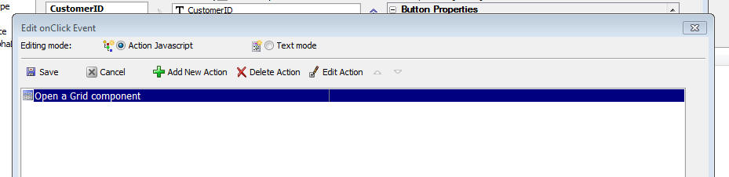
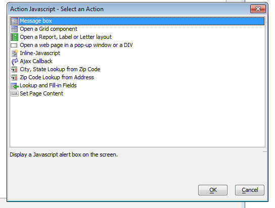
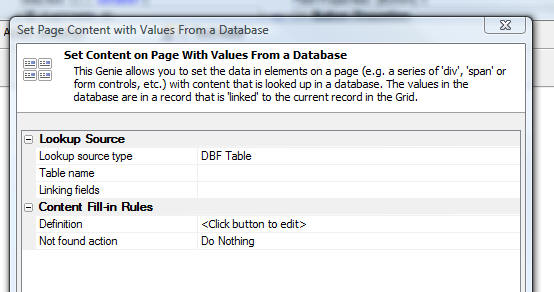
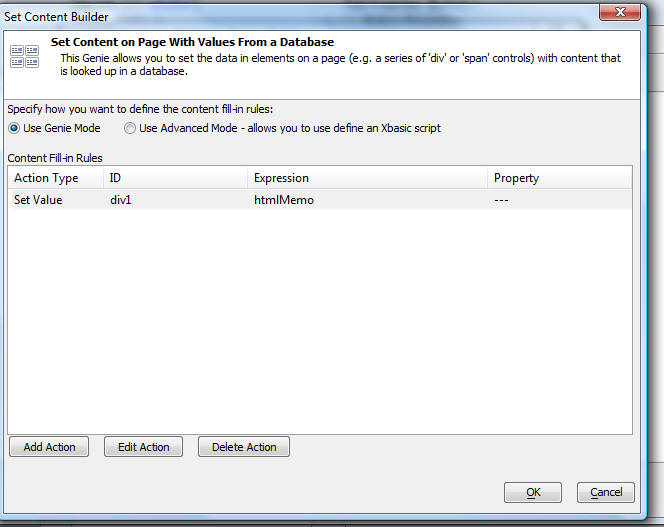
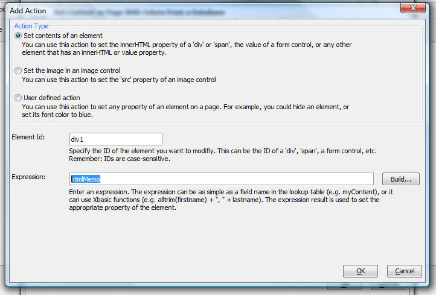

Action Javascript
The Grid Component allows you you to add JavaScript code to your Grid. There are a large number of events for which you can define Javascript event handlers.
In many cases, you can use Action Javascript to help you write the Javascript. For example, if you put a button in the Grid (by selecting the Insert... hyperlink underneath the list of fields), you can use Action Javascript to define the code to open a new Grid that is linked to the current row, or print a Report.
The image below shows the Javascript editor to define the Javascript for the 'click' event on a button.
You can define the code using either Action Javascript, or 'Text mode' - which switches the editor to a text area where you can type in any code that you want.
If you switch to Text mode after you have already defined actions using Action Javascript, the code for the Action Javascript is shown in the editor. This is an excellent way of using the Genie to get started and then enhancing the code with your own code.

To add a new action using the Action Javascript editor, click the 'Add New Action' button and make your selection from the list of actions (shown below).

You can right click on an action in the Action Javascript editor and select commands. One of the available commands is 'View Javascript' which shows you the Javascript that was automatically generated for you. Depending on the action, the Javascript might be divided into several pieces - some that is inserted directly into the control (e.g. in the control's on
The list of actions from which you can choose include:
| Message box | Display a Javascript alert box on the screen. |
| Open a Grid component | Open a Grid component in a pop-up window, or in a DIV on the current page. If the Grid is running inside a Tabbed UI component, can also open the target Grid in a new pane in the Tabbed UI. The target Grid is typically filtered using data from the current record. |
| Open a Report, Label or Letter layout | Display a report, label or letter layout as a PDF file using the Acrobat PDF reader. The report is displayed in either a pop-up window, or in a DIV on the current page. If the Grid is running inside a Tabbed UI component, can also open the target Report in a new pane in the Tabbed UI. |
| Open a web page in a pop-up window or a DIV | Open a web page (including .a5w pages, static .html pages, or any other web page, e.g. www.google.com |
| Inline-Javascript | Allows you to enter some hand-coded Javascript code. |
| Ajax Callback | Define a user-defined ajax callback. The callback can be handled by an Xbasic function that is defined in the Grid component, by a separate .a5w page, or by another page (.e.g. .php, .asp, .aspx, etc.) page. |
| City, State Lookup from Zip Code | For a given zip code, lookup the city and state on the USPS web site and fill in the city and state in the current record. |
| Zip Code Lookup from Address | For a given address, lookup the Zip code on the USPS web site and fill in the Zip code field in the current record. |
| Lookup and Fill-in Fields | Lookup values in a table and fill-in fields in the current row from fields in the Lookup Table. See below for more details. |
| Set Page Content | Set the content in one or more page elements (i.e. 'divs', 'spans', form fields, etc.) to values obtained from fields in a Lookup Table. See below for more detaisl. |
Lookup and Fill-in Action
The 'Lookup and Fill-in Values' allows you to perform an Ajax callback to find a matching record in a Lookup Table and then fill-in fields in the record you are editing with data from the Lookup Table. Features of this action include:
- Link to the lookup table on multiple files
- Fill in multiple fields in the current record
- Options to skip filling in fields in the current record if the field already has data in it.
- Option to display a message, or invoke a Javascript function if a matching records is not found.
Examples of where it might make sense to use this action include the on
'Set Page Content' Action
This action allows you to set the content of parts of a page (e.g. 'div', 'span', 'iframe' and other elements) with content that comes from a database. This action makes an Ajax callback to the server to find a record that is 'linked' to the current record in the Grid, and then it sends back the appropriate Javascript response to the browser to set the content of the specified page elements.
For example, say that the .a5w page in which you have placed a Grid has a div with an id of 'content1'. Every time you click on a different row in the Grid, you want to make an Ajax callback to the server to find the record in a lookup table that is linked to the current row in the Grid, and then you want to set the data in the 'content1' div to the value of the 'HTMLNotes' field in the lookup table. The 'Set Page Content' action can be used for this.
The 'Set Page Content' action can actually be used to set any Javascript property of any element on a page to a value that is computed on the server using data from the lookup table. For example, it could be used to set the src property of an IFrame, or the src and title property of an Image, or the style property of a div, etc.
When you select this action, the following builder is displayed:

This allows you to define the lookup table, and how it is linked to the data in the current record.
Once you have defined the lookup table, you can click the smart field for the 'Definition' to define the rules for what content gets filled-in. This dialog looks like this:
You can define as many rules as you want.

To define a new rule, click the 'Add Action' button. This dialog allows you to add a new action.
If you use 'Advanced' mode in the above dialog, then you can write an arbitrarily complex Xbasic script to generate the Ajax response that is sent to the server.
